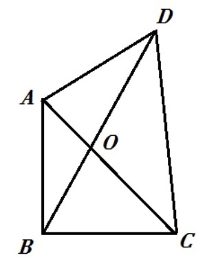

2018-浙江-理-9 【平面向量】
已知a⃗ ,b⃗ ,e⃗ 是平面向量,e⃗ 是单位向量,若非零向量a⃗ 与e⃗ 的夹角为π3,向量b⃗ 满足
b⃗ 2−4e⃗ ·b⃗ +3=0,则|a⃗ −b⃗ |的最小值是
A.3‾√−1
B.3‾√+1
C.2
D.2−3‾√
2017-浙江-理-10 【平面向量】
如图,已知平面四边形ABCD,AB⊥BC,AB=BC=AD=2,CD=2,AC与BD交于点O,
记I1=OA−→−·OB−→−,I2=OB−→−·OC−→−,I3=OC−→−·OD−→−,则
A.I1<I2<I3
B.I1<I3<I2
C.I3<I1<I2
D.I2<I1<I3

2017-浙江-理-15 【平面向量】
已知向量a⃗ ,b⃗ 满足|a⃗ |=1,|b⃗ |=2,则|a⃗ +b⃗ |+|a⃗ −b⃗ |的最小值是(),最大值是()
2016-浙江-理-15 【平面向量】
已知向量a⃗ ,b⃗ ,|a⃗ |=1,|b⃗ |=2,若对任意单位向量e⃗ ,均有|a⃗ ·e⃗ |+|b⃗ ·e⃗ |≤6‾√,
则a⃗ ·b⃗ 的最大值是()
2015-浙江-理-15 【平面向量】
已知e1→,e2→是空间单位向量,e1→·e2→=12,若空间向量b⃗ 满足b⃗ ·e1→=2,b⃗ ·e2→=52,
且对于任意x,y∈R,|b⃗ −(xe1→+ye2→)|≥|b⃗ −(x0e1→+y0e2→)|=1(x0,y0∈R)
则x0=(),y0=(),|b⃗ |=()
2014-浙江-理-8 【平面向量】
记max{x,y}={x,x≥yy,x<y,min{x,y}={y,x≥yx,x<y,设a⃗ ,b⃗ 为平面向量,则
A.min{|a⃗ +b⃗ |,|a⃗ −b⃗ |}≤min{|a⃗ |,|b⃗ |}
B.min{|a⃗ +b⃗ |,|a⃗ −b⃗ |}≥min{|a⃗ |,|b⃗ |}
C.min{|a⃗ +b⃗ |2,|a⃗ −b⃗ |2}≥|a⃗ |2+|b⃗ |2
D.min{|a⃗ +b⃗ |2,|a⃗ −b⃗ |2}≤|a⃗ |2+|b⃗ |2